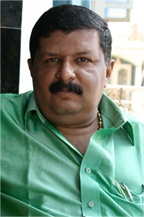

Senior Care Options
Our Chairman, Roshan Jacob got inspired to start a home based care for the elderly after working many years in many corporate hospitals. For many years, Jacob worked in healthcare as a hospital administrator. While in the hospital environment, he watched many of his patients – especially seniors – leave the facility and return home, but not necessarily return to health. Once home, a lot of his former patients were unable to care for themselves. During when he worked at the hospitals he felt that there is a massive dearth of quality services to the elderly and Mr. Jacob realized that he could make a difference, not just in the senior care industry but by providing reliable and compassionate long term care for people of all ages.
Jacob knew that with a little help, most of these people could lead healthy, happy lives in their own homes. But he also knew that there were very few professional companies that offered this kind of help. First, he observed and studied dozens of families to understand the different kinds of challenges they faced and what kind of care would help. This is when he realized that more and more people are striving to “age in place” which refers to the ability of any person to grow old in their own home or that of their family.
As Social Gerontology Consultant and the Chairman of advantAGE Seniors, Roshan Jacob, has spent the past 12 years helping families with a rare combination of Law and public health background. Education spanning from St. Berchman's Kerala, Law College Trivandrum, BITSPilani, CMC Vellore, and National Law school is what makes him stand out. Being a honorary member of the American Geriatrics Society and Gerontological Society of Australia, he has extensive knowledge in the realm of social gerontology. Jacob and his team of Masters-level social workers will guide you seamlessly through the available options, focusing on patient needs and the family’s needs.
His educational background and several years in the hospital industry, helped him to initiate his vision. While researching the availability of the health care support systems for the elderly he realized that there is a huge gap between “what is there and what should be there” in the realm of Geriatric Care. 12 years back, the concept of Gerontology and Geriatricsare not developed or even heard off in the country. So we are proud to say that, we pioneered Social Gerontology in India.
Truly, Soumya Nair is compassion unlimited and from a very young age she discovered social work as her calling. She had her schooling and college in Mysore and even before she completed her studies she has been keenly associated with the orphaned children's education. In her college days she used to find time for teaching and helping these underprivileged children while her friends while away the time.
Soumya Nair joined advantAGE seniors in the year 2002, and soon she took over the mantle as the executive director. Soumya has successfully steered the organization as a thriving business model which is more of a social enterprise. Following the footsteps of Mr. Roshan Jacob, the founder of advantAGE seniors Soumya at the helm as CEO and ED has transformed the organization as a household name in long term care in Bangalore. Today known all over Bangalore as pioneer in social gerontology, cares more than 500 patients of different ages and in different settings. Soumya is without question the most sought after geriatric care professional in the realm of social gerontology in Bangalore.
She advocates for more senior friendly approaches and civic responsibility through her Nurse Competency Lectures, and regular columns in dailies. She reaches out to the infirm elderly and long term care patients through her two NGOs, advantAGE and Swavalambhini, which provide elder care, long term care, education, training, counselling and health care to the urban and rural poor. Her latest initiative, “Continuing Competency for Nurses”, aims to equip the nurse fraternity with the skills in guided care nursing.
"What makes Soumya ... one of the most admired senor service provider is the way she reaches out to people as a social gerontolist and person behind two organizations founded for causes close to her heart -- senior's welfare and distressed women's development through skill development." wrote India Today. Profiled by India Today as a low profile and dedicated women entrepreneur, Soumya considers her work among the infirm elderly and the rehabilitated distressed women should inspire the younger generation because she thinks more and more women should be sensitive to elder care issues.
Organising seminars on pre-retirement, Conducting workshops in Continuing Competency for Nurses, counselling senior citizens and their family members and training young people for caregiving, takes up the bulk of Nair's day. Today, Soumya is a beacon of hope for the hundreds of senior citizens and their families who are in the twilight of their life, filled with pent-up frustrations due ill health and the issues of caregiving. She considers the smile in the face of an elderly patient as a bonus.
Anu P John is a Life Science professional having 12 years of experience in Research, Projects, Strategic Planning, Sales & Marketing, Business Development and Service Delivery across the Healthcare, IT and ITES sectors. She has strong process skills with clear decision making, planning and leadership capabilities. At advantage, Anu is responsible for innovation, planning and execution for new strategic initiatives, products, and networks. She believes in delivering value to clients and developing trusted relationship.
Have served leading organizations like St. John’s Medical College, Center for Global Health Research, Brickwork India etc. Prior to advantAGE, Anu was the Co-Founder of Eyota Technology, an IT enabled business solution provider.
Our caregivers are credited for their skills, experience, and reliability and caring nature. This is our difference. We make sure that we train, tune, sensitize, motivate and monitor. It is an ongoing process and every year they are given two orientation classes to update their knowledge. We acknowledge their sacrifice as a 24 hour live-in caregiver with lot of difficulties and challenges in the job. We prepare them to this job and request them to adjust as far as possible. Preparing them is a herculean task as well as an expensive affair because there is little time available and free food accommodation should be provided in the training period.
Nobody choses this profession due to the difficulties involved in it. The difficulties are that as a live in caregiver they have to live with a family which is absolutely strange to them. Once married, nobody comes to this profession. Many a time there will not be any assistance and the caregiver may be left alone attending the bed ridden patient. Caregiver have to adjust the different cultures and different food habits. There is always a risk that patient or patient's relatives can misbehave. Very rarely patient or patient’s relatives understand caregiver fatigue and they expect the caregiver to work 24 hour. Above all many a time patient or patients’ relative may not even acknowledge the timely help and the difficulties and sacrifices.
A little bit background of our hiring policy will help you understand many things about our caregivers. First the difficulties getting people. Now, urban less educated girls have more opportunities in the ever booming retail industry as well as the textile industry in and around Bangalore. And these urban girls prefer to work only few day hours and not as live-ins. So hiring urban girls is near to impossible.
Now, next option is getting people from the rural areas. This is much more a daunting task as we have to overcome many more barriers. Parents are unwilling to send girls to an urban area and worried about their safety. Again social taboos and cultural adaptation are to be dealt with. In the rural areas even today marriages are conducted at a very young age. Since most of the parents are illiterate, convincing them is again near to impossible. Let's assume we are successful in jumping these hurdles and bring them to training. While on training, more than 50% of the trainees will drop out saying that they don't want to do this dirty, difficult job. People like to choose relatively easy glamourous jobs. Here it is a dirty job of cleaning the patient, staying 24-hour with the patient, and confining to the four walls of the patient room with the personal freedom curtailed.
To overcome all these challenges we have started a project called “Swawalabhini”, in the north Karnataka villages. Here we have followed the principles of backward integration. We work with the selected taluks and among the women. That is how we procure trainees. All our caregivers have a reference and we are in constant touch with their families. Their educational qualification is 10th or PUC. To work as a caregiver in a home setting, our experience tells that it is not qualification or skills that matter, more than that it is the attitude and patience that matters. We impart basic skills and a whole lot of qualities and motivate them to take up this noble job. We train them in our managed care facilities for two months and impart all the necessary skills for caregiving.
We don't allow our customers to interview the caregivers before they hire. This is because you'll not be able to judge the capabilities of our caregivers. We are the best to judge. We know that the right match is important and we make every effort to accurately match our caregivers to our clients.
OUR TRAINING : Our training syllabus is based on the AMERICAN RED CROSS society curriculum. The training duration is for two months and which will be on the job training. All our Geriatric Nursing Assistants are specially trained in caring for the bedridden elderly patients suffering with long term illnesses, such as Alzheimer’s disease, Parkinsonism disease, MND, MS, renal failure etc.
Training is given in tracheostomy care, PEG feeding, Ryle's tube feeding, colostomy care, catheter management, assisting patients with dialysis care etc. Apart from this all the care givers are trained in providing assistance to the patients with bed pan, catheterizations, sponging, taking care of personal hygiene of the patient, perineal care, oral care, preventive care such as preventing bedsore and contractures etc. The care givers are also trained in coma care for the trauma patient and also terminally ill patients. They are also trained in administering medications and coordinating with other medical-care team members.
The Geriatric Nursing Assistants are tuned and sensitized for adjusting to different households, different food and a multitude of culture. They are all taught that each patient has different needs and requirements and all the care takers are tuned to understand this and perform better. Since they work in patient's house they are asked to maintain the maximum integrity. Other qualities we insist are transparency, honesty, punctuality, discipline and above all kindness, obliging, and patience. These finer qualities will make them stand out and they can dole out the best care possible.
advantAGE seniors was founded in 2001. With a strong commitment to community based resources and education, and most especially a commitment to support the varying special needs, advantAGE seniors quickly became known as a professional and reliable home care company where all clients are made to feel like family.
Business Philosophy
Our home care allows seniors to remain independent in their homes for as long as possible. We provide compassionate care at home and personalized eldercare services designed to help seniors and their families with important decisions through life's transitions. Every family who wish to take our service undergoes an extensive counseling and then we draw a care plan according to the specific needs. We carefully match our caregivers to your specific homecare needs, and personally introduce you to each new caregiver.
Our care home is meant for patients who needs more specialized care and team effort. In few cases home is not conducive for caring as we face lot of constraints. Sometimes the condition itself warrants more intensive care or as simple as the space constraints. After evaluation, we suggest the best option, home care or long term care facility.
Purpose
We recognize that among the elderly, persons with disabilities, and anyone else for that matter, there is a growing desirability, and increasing need, to receive respectful and liberating self-directed care at home, wherever home is. So we promote aging in place as far as possible.
Future
We envision a more vibrant social gerontology practice in the years to come, a future where private homecare providers led by advantAGE seniors cooperate seamlessly with not-for-profit and public organizations and professionals to provide widely accessible, self-directed and liberating in-home care services across the social continuum.
Mission Statement
Our mission is to help seniors remain in their own home as long as possible. We seek to improve the quality of senior life through dependable, caring service and thereby protect the dignity of seniors amid the decline of their physical and mental faculties. We further commit ourselves to assist the families of seniors who struggle with their complex responsibilities while caring for elder parents or relatives.
Values
Accountability - We conduct ourselves in a manner consistent with the agreements we enter, the claims we make, and the general conduct expected of a professional. We will keep our promises.
Communication
We will take steps to ensure that all stakeholders are given means to have their voice heard and valued in decision-making processes. We will listen.
Community
While we aspire to become an industry-leading homecare service provider, we will do so with a sense of humility, and an understanding that the communities and professional networks in which we operate, house the true agents of our success. We will get involved in our communities.
Integrity
We will act in an ethical, moral and responsible manner in all our interactions.
Safety
The safety of our clients and our employees is of paramount concern. We will task ourselves with implementing the appropriate systems and processes that will ensure a safe environment.
In 2009, we reinvented ourselves as advantAGE seniors with a strong commitment to a community based resources and education. advantage seniors quickly became known as a professional and reliable long term care service provider where all clients are made to feel like a family. Coming to elder care we are proud to say we set the standards in Bangalore and elsewhere. Our nurses are properly trained, tuned, sensitized, motivated and monitored. Every nurse who works with us has undergone adequate training in the real situation rather than just the theory. Our strengths are our nurses who are properly trained and all of them are taught to be loving, caring, and compassionate when it comes to patient’s care.
Co-Founder Ms. Soumya Nair was instrumental in setting up the Coma Care facility, a firstof it’s in the country in the year 2010. It is a 12-bedded facility exclusively for comma care. It is her wish to provide solace to the family who is in the midst of crisis and also in a quandary. Many of them lost in time and direction as what to do with the looming crisis. With our expertise and passion for care, we dole out appropriate care and dignity to the comma patient.
In 2011, advantAGE seniors joined forces with Elder Life Management, NJ, USA for knowledge transfer for the best practices in long term care. Elder Life Management is a leading provider of hospice, palliative, private duty and home care services with a large operation in New Jersey. Today, advantAGE seniors is backed by an impressive panel of international experts and academicians from world reputed universities.
As part of our strategy to give impetus to the social gerontology education in India, we organized 7 International seminars across south India. In this endeavor we are proud to associate with NIMHANS-Bangalore, Pushpagiri Medical College- Thiruvalla, Lizzy Hospital – Kochi, PSG Medical College- Coimbatore, Apollo Hospital- Chennai,Manipal University-Manipaland School of Social Work, Roshninilya- Mangalore. A big boost to this endeavor is the support given by National Gerontological Nurses Association (USA).
We strongly believe in the good old adage that prevention is better than cure. Ageing is not an overnight process but a gradual and slow process. But ageing is inevitable to every one and will caught you unawares. And if not prepared to face the challenges it becomes a mess in later life. Our experience with ageing taught us that many lives get into the vortex of despair and suffering want of preparedness. We believe that a little bit preparation is necessary in later life to have dignity. That is why we deliver Retirement Lifestyle Planning to the young retirees to make them aware of the pitfalls in later life and thereby a meaningful and stress free ageing.
Knowing the importance of social gerontology is the years to come, we thought of setting up “institute of Social Gerontology and Research”, iSGR. Currently we are engaged in three studies. Bangalore City Seniors Profile is half way through and we hope to publish our findings by end of 2015. This advantAGE seniors initiative started with the notion that communities play a key role in enabling aged residents to live healthy and productive lives. As social gerontology experts working on aging issues past decade, we wanted to know how well the local Bangalore are engaging and supporting their older residents and what improvements could be made in the future to make these communities more elder-friendly so that they accommodate the aspirations and needs of the rapidly growing elderly.
Second study is a joint initiative with School of Social Work, Roshninilya, Mangalore. This is a study to understand the young generation’s perceptions on the elderly and on the services for the elderly in Mangalore. The ongoing study aims to highlight the importance of an increased understanding and practical cooperation between generations, particularly between the young and old.
Next study is to understand the absenteeism and work to family conflict among the employed informal caregivers, titled, “Caregiving: the impact on the Indian workforce”. This study hopes to provide anoverview of the issues associated with working caregivers.
Next major initiative is the CCN Programs. (Continuing Competency for Nurses). This is an educational series to impart continuing education in the realm of guided care nursing. By attending to these series of lectures that involve these useful topics, nurses will be well prepared to care the chronically ill patient, and more specifically providing quality health care services to the aging population and their families.
Every patient is unique for us because the disease varies, need differs and family dynamics changes so we draw a custom made care plan for each patient. Our assessment sessions are too elaborate which will give us the maximum info about the disease and the condition. This when we juxtapose with the family dynamics, we are ready with a long term care plan. We insist that there is no tacky or sloppy approach possible when it comes to long term care. Long term care should be meticulously planned with the in-built mechanism of constant reviews as the condition changes. If the condition changes to a different level, one should be open for a different strategy.
13 years in this Industry and countless number of patients has taught us good and bad lessons. We treat you like our own friend, because you are. We listen, because your experience and input help us make it simpler for thousands of families like yours. We strive to provide the best experience possible, because you expect nothing less. We make doing business with us easy, because you have more important things to worry about. We talk openly because only truth prevails and we don't want to give you false promises.We stick to a simple and straightforward approach. Nothing unambiguous about our functioning so wepromise:
- Best quality
- Compassionate Care
- Professional Approach
- Honest Dealing
- Ethical Practice
- High Standards
- Continuity of Care
- Straightforward Attitude
- Transparent Protocol
- And above all
- Kindness..
We Guarantee Compatibility
We tailor our services to meet the individual needs of each client. We provide a guarantee of compatibility, therefore if a conflict will arise, we will not be satisfied until the client is satisfied with the Caregiver. We match their language capabilities as well as their familiarity with the clinical condition. Our guarantee offers our clients the peace of mind knowing they can replace the Caregiver at any time.
We Guarantee Continuity of Care
Change can be difficult especially for the patient who is used to a particular caregiver; therefore we strive to maintain the highest level of continuity for each client. Change of caregiver happens only when it is absolute necessary. Having the same Caregiver offers priceless stability for patients and family members.
We guarantee trained and experienced caregivers
Each care giver is selected for training after evaluating their passion for caring and we reject the prospective candidates if they don’t understand the nuances of caregiving. We conduct a thorough background check and have direct contact with the parents, thus all the Caregivers are thoroughly pre-screened. Each Caregiver attends a two month orientation class and they all have on the job training. We follow the curriculum of American Red Cross society.
We Guarantee Proper Monitoring
Periodical monitoring is done to understand the patient’s condition as well as the caregivers involvement. We take periodic feedback from the family as well as the caregiver. This will give us the opportunity to improve upon the caregiving standards.